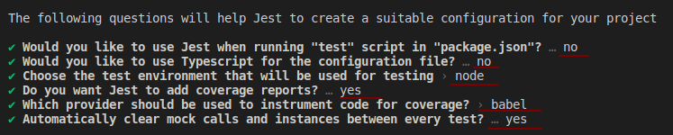
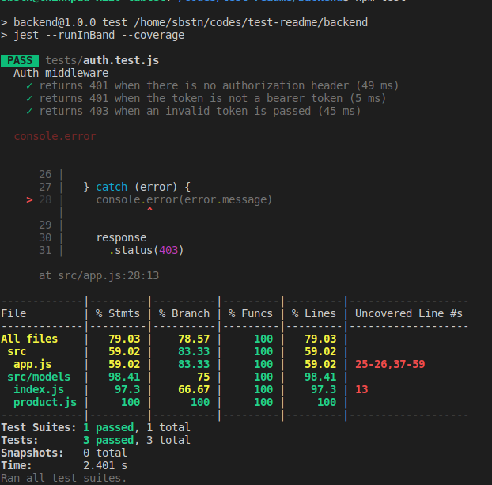
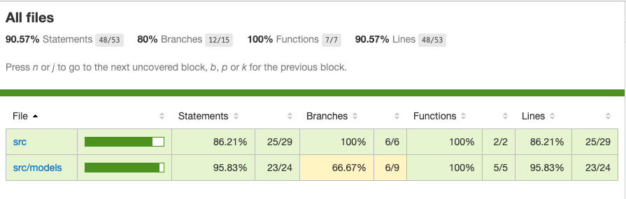
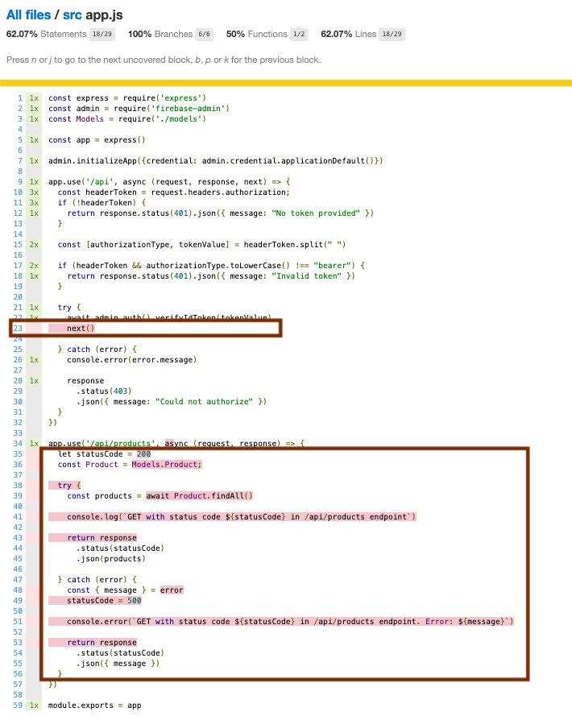
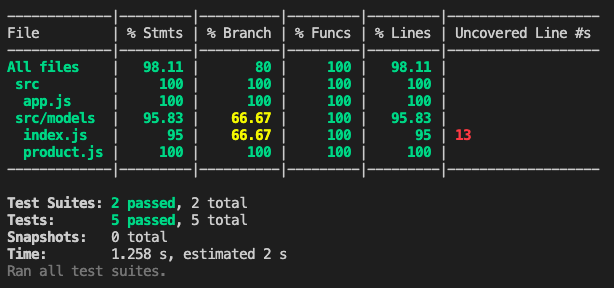
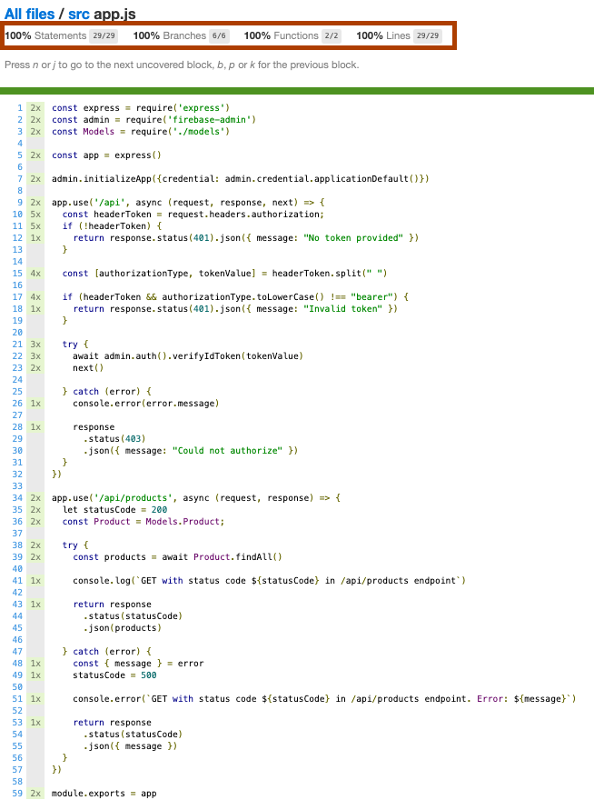
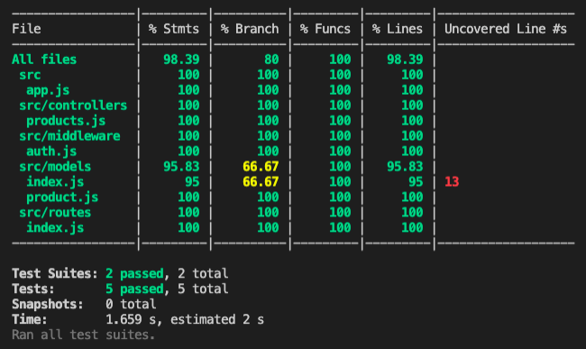

Refactorización utilizando pruebas de software en Backend
En este punto la funcionalidad ya está completa, pero la organización del código se puede mejorar para aumentar su flexibilidad a los cambios que inevitablemente llegarán.
Para esto necesitamos una forma de asegurar que no romperemos nada de lo que hemos logrado. La funcionalidad se debe mantener, pero la calidad del código debe aumentar. Para esto agregaremos pruebas de software para el código tanto en el Backend como en el Frontend.
Pruebas de software en Backend
Utilizaremos tres herramientas populares de Javascript para escribir y ejecutar pruebas: jest, jest-cli y supertest. Primero navegamos a la carpeta /backend y luego ejecutamos el siguiente comando:
npm i --save-dev jest jest-cli supertest
Al igual que como lo hicimos con Sequelize-cli, vamos a exponer el comando de Jest para no tener que instalarlo globalmente. Eso es en el archivo backend/package.json. También vamos a cambiar el comando de test que viene por defecto. El archivo quedaría de la siguiente forma:
...
"scripts": {
"start": "nodemon src/server.js",
"test": "jest --runInBand --coverage",
"jest": "jest",
"sequelize": "sequelize"
},
...
Jest tiene la opción –init para configurar el entorno de pruebas. El comando a ejecutar es el siguiente: npm run jest -- --init Esto nos hará una pequeña serie de preguntas que debemos responder con lo siguiente:

Ahora continuaremos configurando una base de datos exclusivamente para la ejecución de pruebas. Para esto modificamos el archivo backend/src/config/config.json en la sección “test”.
"test": {
"username": "root",
...
"host": "test.database.sqlite3",
"dialect": "sqlite",
"logging": false
},
Durante la ejecución de las pruebas se creará una nueva bases de datos que no necesitamos incluir en el repositorio, por lo que agregaremos el nombre de la base de datos de prueba test.database.sqlite3 al .gitignore.
Para probar el backend vamos a crear la carpeta /tests dentro del directorio backend y crearemos una prueba simple para revisar que esté todo bien configurado. A este archivo lo llamaremos auth.test.js ya que es la primera funcionalidad de describimos de nuestro servidor. Su contenido es el siguiente:
const server = require('../src/server')
describe('Auth middleware',() => {
it('works', () => {
expect(true).toEqual(true)
})
})
Esto lo ejecutamos con el comando que configuramos npm test. La salida en la terminal de esta ejecución es la siguiente:

Tenemos resultados confusos, ya que en concreto la prueba si pasa, pero vemos una indicación en rojo de que estamos ejecutando console.log. En este caso es Express en la llamada app.listen que hace correr un proceso en forma indefinida y jest queda ejecutándose. Entonces debemos separar lo que vamos a probar (la lógica) de lo que ejecuta el servidor (listen).
Logramos esto separando el archivo server.js para que quede de la siguiente forma:
const app = require('./app')
const port = process.env.PORT
const environment = process.env.NODE_ENV
app.listen(port, () => {
console.log(`App server listening in mode ${environment} on port ${port}`)
})
El resto del contenido lo agregaremos aun archivo llamado app.js también en la raíz de Backend con lo siguiente:
const express = require('express')
const admin = require('firebase-admin')
const Models = require('./models')
const app = express()
admin.initializeApp({credential: admin.credential.applicationDefault()})
app.use('/api', async (request, response, next) => {
const headerToken = request.headers.authorization
if (!headerToken) {
return response.status(401).json({ message: 'No token provided' })
}
const [authorizationType, tokenValue] = headerToken.split(' ')
if (headerToken && authorizationType.toLowerCase() !== 'bearer') {
return response.status(401).json({ message: 'Invalid token' })
}
try {
await admin.auth().verifyIdToken(tokenValue)
next()
} catch (error) {
console.error(error.message)
response
.status(403)
.json({ message: 'Could not authorize' })
}
})
app.use('/api/products', async (request, response) => {
let statusCode = 200
const Product = Models.Product;
try {
const products = await Product.findAll()
console.log(`GET with status code ${statusCode} in /api/products endpoint`)
return response
.status(statusCode)
.json(products)
} catch (error) {
const { message } = error
statusCode = 500
console.error(`GET with status code ${statusCode} in /api/products endpoint. Error: ${message}`)
return response
.status(statusCode)
.json({ message })
}
})
module.exports = app
Y modificamos la prueba para requerir el archivo app.js:
const app = require('../src/app')
describe('Auth middleware',() => {
it('works', () => {
expect(true).toEqual(true)
})
})
Con estos ajustes la salida de las pruebas queda como indica la siguiente imagen:

Casos de la funcionalidad para definir pruebas
En este momento el servidor tiene las siguientes características:
- Valida que las solicitudes a
/apiestén autenticadas con 4 casos posibles. 3 casos en los cuales respondemos un código de error y uno en el cuál resulta exitoso y se deja pasar la solicitud.
EL resumen el archivo server tiene los siguientes bloques de código para cada uno de los casos.
backend/src/server.js
app.use('/api', async (request, response, next) => {
if (!headerToken) {
// Caso 1 error: no se envía la cabecera "Authorization"
}
if (headerToken && authorizationType.toLowerCase() !== "bearer") {
// Caso 2 error: se envía una cabecera "Authorization" que no es del tipo "Bearer"
}
try {
// Caso 3 éxito: La solicitud fue validada exitosamente
// y la solicitud ingresa al servidor ejecutando la función "next"
} catch (error) {
// Caso 4 error: La librería "firebase-admin" no valida el token enviado
}
})
- Las solicitudes ya autenticadas que consultan
/api/productspueden tener 2 casos posibles al hacer consultas a la base de datos.
backend/src/server.js
app.use('/api/products', async (request, response) => {
try {
// Caso 1 éxito: Se consulta la base de datos exitosamente
} catch (error) {
// Caso 2 error: Ocurre un error al consultar la base de datos
}
})
Estas son las funcionalidades que debemos mantener y que deben resistir el proceso de refactorización.
Es una buena práctica primero previsualizar los casos a los cuales vamos a escribir las pruebas así tenemos claro que código está involucrado en cada uno de los casos y será más fácil escribir la implementación de la prueba.
Implementación de pruebas sobre el Middleware de validación de solicitudes autorizadas
Vamos a escribir las pruebas que definimos para los casos que describimos anteriormente.
Caso 1 error: no se envía la cabecera “Authorization”
Resultado esperado
Retorna 401 y un mensaje "No token provided" cuando no viene la cabecera de autorización
Vamos a escribir el código para representar este caso como indica el siguiente código:
backend/tests/auth.test.js
const supertest = require('supertest')
const app = require('../src/app')
describe('Auth middleware',() => {
it("returns 401 when there is no authorization header", async () => {
const response = await supertest(app)
.get('/api/any-endpoint')
.expect(401)
expect(response.body).toMatchObject({ message: "No token provided" })
})
})
Podemos notar como a partir de la librería Supertest podemos simular una solicitud al servidor sin necesidad de crear una real pasándole el módulo de express que en nuestro caso se exporta a través del valor app. Esto permite a Supertest conocer la configuración de las rutas que hemos definido para nuestros endpoints y hacer la simulación.
En adelante vamos a complementar este archivo agregando los bloques it dentro del bloque describe en el mismo orden que hicimos nuestro análisis
Caso 2 error: se envía una cabecera “Authorization” que no es del tipo “Bearer”
Resultado esperado
Retorna 401 y un mensaje "Invalid token" cuando el token no es de tipo Bearer
El código que representa este caso es como indica el siguiente código:
it('returns 401 when the token is not a bearer token', async ()=>{
const response = await supertest(app)
.get('/api/fake')
.set('Authorization','Token faketoken')
.expect(401)
expect(response.body).toMatchObject({ message: 'Invalid token' })
})
Caso 3 éxito: La solicitud fue validada exitosamente y la solicitud ingresa al servidor ejecutando la función “next”
Resultado esperado
Al validar el token deja pasar la petición ejecutando la función "next"
Este caso no lo implementaremos acá ya que cuando hagamos las pruebas del endpoint GET /api/products estaremos pasando por este middleware y será implícito que la prueba pasa por la función next
Caso 4 error: La librería “firebase-admin” no valida el token enviado
Resultado esperado
Retorna 403 y un mensaje "Could not authorize" cuando el token es de tipo Bearer, pero no es válido
En este caso debemos crear un mock de la librería firebase-admin para simular que el llamado al método verifyIdToken tome el comportamiento que necesitemos para la prueba. Primero modificaremos las funciones que utilizamos de firebase-admin para que la prueba se ejecute sin errores:
const supertest = require('supertest')
const app = require('../src/app')
const admin = require('firebase-admin');
jest.mock('firebase-admin', () => ({
auth: jest.fn()
.mockReturnValue({ verifyIdToken: jest.fn() }),
credential: {
applicationDefault: jest.fn(),
},
initializeApp: jest.fn()
}))
...
Ahora sí podemos agregar el último it en el que forzaremos un rechazo de la promesa en la función verifyIdToken, para simular que se entregó un token inválido.
it('returns 403 when an invalid token is passed',async () => {
admin.auth().verifyIdToken.mockRejectedValue(new Error())
const response = await supertest(app)
.get('/api/fake')
.set('Authorization', 'Bearer faketoken')
.expect(403)
expect(response.body).toMatchObject({ message: 'Could not authorize' })
})
Ejecutamos y vemos que en la ultima prueba jest incluso nos muestra el console.error que se debe ejecutar en el código de la aplicación cuando llega un token inválido. Lo puedes ver en el siguiente screenshot:

Con todo lo anterior el código completo del archivo auth.test.js queda de la siguiente forma:
backend/tests/auth.test.js
const supertest = require('supertest')
const app = require('../src/app')
const admin = require('firebase-admin')
jest.mock('firebase-admin', () => ({
auth: jest.fn().mockReturnValue({ verifyIdToken: jest.fn() }),
credential: {
applicationDefault: jest.fn(),
},
initializeApp: jest.fn()
}))
describe('Auth middleware',() => {
it('returns 401 when there is no authorization header', async () => {
const response = await supertest(app)
.get('/api/fake')
.expect(401)
expect(response.body).toMatchObject({ message: 'No token provided' })
})
it('returns 401 when the token is not a bearer token', async ()=>{
const response = await supertest(app)
.get('/api/fake')
.set('Authorization','Token faketoken')
.expect(401)
expect(response.body).toMatchObject({ message: 'Invalid token' })
})
it('returns 403 when an invalid token is passed',async () => {
admin.auth().verifyIdToken.mockRejectedValue(new Error());
const response = await supertest(app)
.get('/api/fake')
.set('Authorization', 'Bearer faketoken')
.expect(403)
expect(response.body).toMatchObject({ message: 'Could not authorize' })
})
})
Antes de continuar vamos a echar un vistazo a una nueva carpeta que se ha creado en la raíz del directorio backend llamada coverage. En su interior veremos otro directorio llamado lcov-report y en su interior un archivo index.html Si lo abrimos con un navegador web veremos algo como lo siguiente:

Luego si hacemos click en src y luego en app.js veremos lo que muestra la siguiente imagen:

Podemos ver claramente como es que el informe de cobertura nos muestra que aún no hemos escrito pruebas que ejecuten los códigos remarcados en la imagen.
⚠️ Ahora vamos a agregar al archivo .gitignore el directorio coverage porque es importante que este informe sea regenerado por cada ejecución de las pruebas pero no lo necesitamos como parte del repositorio.
Seguimos adelante con las pruebas cuando la solicitud pasa el middleware de autorización y solicita el listado de productos.
Implementación de pruebas para endpoints de productos
Vamos a escribir las pruebas del endpoint GET /api/products:
Caso 1 éxito: Se consulta la base de datos exitosamente
Resultado esperado
Retorna 200 y una lista de productos que previamente fueron insertados en la base de datos
Haremos un nuevo archivo dentro del directorio backend/tests llamado products.test.js.
Este es un caso más complejo, porque debemos simular (usando dobles de prueba) que la solicitud cumple con los requisitos de autorización, de otra forma nuestro código no se ejecutará. Además necesitamos probar que la aplicación entrega el arreglo de productos definido en los Fixtures, por lo que hay agregar estos datos a la BDD antes de enviar la solicitud. Esto lo podemos lograr con las funciones beforeAll y afterAll que se ejecutarán al inicio y al final de todas las pruebas respectivamente con el objetivo de sincronizar la base de datos y correr las migraciones a través de Models.sequelize.sync.
La prueba queda de la siguiente forma:
backend/tests/products.test.js
const supertest = require('supertest')
const admin = require('firebase-admin')
const app = require('../src/app')
const Models = require('../src/models')
const productsFixture = require('../../fixtures/products.json')
jest.mock('firebase-admin', () => ({
auth: jest.fn().mockReturnValue({ verifyIdToken: jest.fn() }),
credential: {
applicationDefault: jest.fn(),
},
initializeApp: jest.fn()
}))
describe('/api/products', () =>{
beforeAll(async () => {
await Models.sequelize.sync({ force: true })
admin.auth().verifyIdToken.mockResolvedValue(true)
})
it('returns an array of products', async () => {
await Models.Product.bulkCreate(productsFixture)
const response = await supertest(app)
.get('/api/products')
.set('Authorization', 'Bearer valid-token')
.expect(200)
expect(response.body).toMatchObject(productsFixture)
})
afterAll(async () => {
await Models.sequelize.close()
})
})
Caso 2 error: Ocurre un error al consultar la base de datos
Resultado esperado
Retorna 500 y un mensaje con el error de la base de datos
Para hacer que la base de datos falle, lo que haremos será destruir la table Products a través de Sequelize utilizando el método drop. Agregaremos el siguiente bloque it bajo del que ya escribimos en el archivo backend/tests/products.test.js
backend/tests/auth.test.js
it('returns 500 when the database throws error', async () => {
await Models.Product.drop()
const response = await supertest(app)
.get('/api/products')
.set('Authorization', 'Bearer valid-token')
.expect(500)
expect(response.body).toMatchObject({ message: 'SQLITE_ERROR: no such table: Products' })
})
al correr el comando npm test deberíamos ver todas las pruebas pasando como muestra la siguiente imagen:

Podemos validar que ahora estamos cubriendo toda la funcionalidad construida hasta el momento con nuestras pruebas revisando tal como lo hicimos anteriormente en el archivo en el directorio coverage.

Ahora con toda nuestra funcionalidad cubierta con las pruebas pasando, volvemos a refactorizar para dividir los controladores, middleware y rutas siguiendo los guías SOLID.
Vamos a re-estructurar el proyecto para que quede de la siguiente forma
<backend>
├── coverage
├── node_modules
├── src
├── config
├── controllers <-- directorio nuevo y archivo
products.js
├── middleware <-- directorio nuevo y archivo
auth.js
├── migrations
├── models
├── routes <-- directorio nuevo y archivo
index.js
├── seeders
app.js
server.js
├── tests
auth.test.js
products.test.js
.sequelizesrc
firebase-service-account.json
jest.config.js
local.database.sqlite3
nodemon.json
package-lock.json
package.json
test.database.sqlite3
Ahora vamos a mostrar el contenido de los 4 archivos involucrados en la refactorización
backend/controllers/products.js
const Models = require('../models');
const Product = Models.Product;
module.exports = {
async index(request, response) {
let statusCode = 200
try {
const products = await Product.findAll()
console.log(`GET with status code ${statusCode} in /api/products endpoint`)
return response
.status(statusCode)
.json(products)
} catch (error) {
const { message } = error
statusCode = 500
console.error(`GET with status code ${statusCode} in /api/products endpoint. Error: ${message}`)
return response
.status(statusCode)
.json({ message })
}
}
}
backend/middleware/auth.js
const admin = require('firebase-admin')
admin.initializeApp({ credential: admin.credential.applicationDefault() })
module.exports = async (request, response, next) => {
const headerToken = request.headers.authorization;
if (!headerToken) {
return response.status(401).json({ message: 'No token provided' })
}
const [authorizationType, tokenValue] = headerToken.split(' ')
if (headerToken && authorizationType.toLowerCase() !== 'bearer') {
return response.status(401).json({ message: 'Invalid token' })
}
try {
await admin.auth().verifyIdToken(tokenValue)
next()
} catch (error) {
console.error(error.message)
response
.status(403)
.json({ message: 'Could not authorize' })
}
}
backend/routes/index.js
const express = require('express');
const router = express.Router();
const productsController = require('../controllers/products')
router.get('/products', productsController.index);
module.exports = router
backend/app.js
const express = require('express')
const authMiddleware = require('./middleware/auth')
const routes = require('./routes')
const app = express()
app.use('/api', authMiddleware)
app.use('/api', routes)
module.exports = app
Volvemos a correr el comando npm test y veremos que el informe de cobertura nos muestra la nueva distribución de los archivos que fueron ejecutados en las pruebas.

De esta manera logramos hacer una refactorización para ordenar y preparar al código del servidor para ser más escalable para los futuros incrementos del código.
Momento de un nuevo commit. Escribimos lo siguiente en la terminal:
⚠️ Debes están posicionado en la raíz del proyecto.
git add .
git commit -m "refactor(backend-refactor): Se agregó set de pruebas de caracterización en el Backend y luego un refactor para dividir responsabilidades"